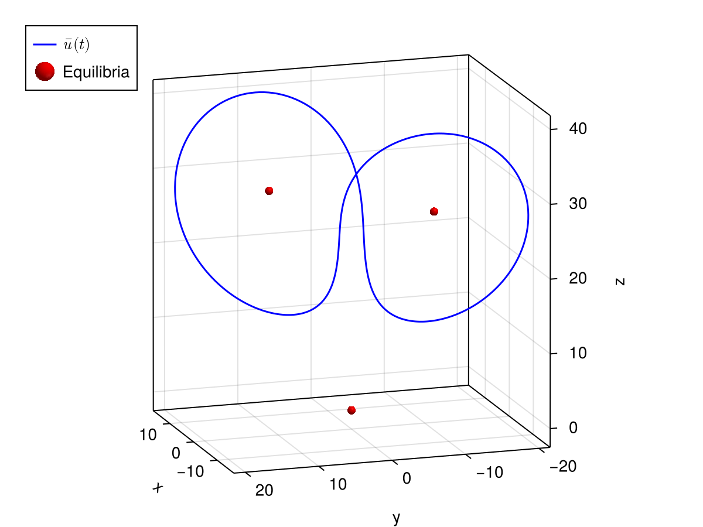

Lorenz system
We prove the existence of a periodic orbit of the Lorenz system
\[\dot{u}(t) = f(u(t)) \bydef \begin{pmatrix} \sigma(u_2(t) - u_1(t))\\ u_1(t)(\rho - u_3(t)) - u_2(t)\\ u_1(t) u_2(t) - \beta u_3(t) \end{pmatrix}, \qquad \sigma, \rho, \beta \in \mathbb{R}.\]
Step 1: Formulation
using RadiiPolynomial
function f(u, params)
σ, ρ, β = params
u₁, u₂, u₃ = u
return [σ*(u₂ - u₁)
u₁*(ρ - u₃) - u₂
u₁*u₂ - β*u₃]
end
function Df(u, params)
σ, ρ, β = params
u₁, u₂, u₃ = u
return [-σ*one(u₁) σ*one(u₂) zero(u₃)
ρ-u₃ -one(u₂) -u₁
u₂ u₁ -β*one(u₃)]
end
function F(x, params, ξ_)
u, τ = unpack(x)
ξ = unpack(ξ_)
return [Derivative(1) .* unpack(u) - τ[1] * f(unpack(u), params),
[adjoint(ξ[1]) adjoint(ξ[2]) adjoint(ξ[3])] * [component(u, j) for j = 1:3]]
end
function DF(x, params, ξ_)
u, τ = unpack(x)
ξ = unpack(ξ_)
M = Matrix{Any}(undef, 2, 2)
L = [Derivative(1) 0*I 0*I
0*I Derivative(1) 0*I
0*I 0*I Derivative(1)]
M[1,1] = L - τ[1] * Multiplication.(Df(unpack(u), params))
M[1,2] = [LinearOperator.(-f(unpack(u), params));;]
M[2,1] = [adjoint(ξ[1]) adjoint(ξ[2]) adjoint(ξ[3])]
M[2,2] = [LinearOperator(0);;]
return M
endStep 2: Approximation (floating-point arithmetic)
The approximate zero
σ, ρ, β = 10.0, 28.0, 8/3
K = 40
u_guess = zeros(ComplexF64, Fourier(K, 1.0)^3)
component(u_guess, 1)[1:2:5] =
[-2.9 - 4.3im,
1.6 - 1.1im,
0.3 + 0.4im]
component(u_guess, 2)[1:2:5] =
[-1.2 - 5.4im,
3.0 + 0.8im,
-0.4 + 1.1im]
component(u_guess, 3)[0:2:4] =
[ 23,
3.8 + 4.7im,
-1.8 + 0.9im]
component(u_guess, 1)[-5:2:-1] .= conj.(component(u_guess, 1)[5:-2:1])
component(u_guess, 2)[-5:2:-1] .= conj.(component(u_guess, 2)[5:-2:1])
component(u_guess, 3)[-4:2:0] .= conj.(component(u_guess, 3)[4:-2:0])
ξ = differentiate(u_guess)
τ_guess = 1.5/(2π) # approximate inverse of the frequencyx_guess = Sequence(Fourier(K, 1.0)^3 × ScalarSpace()^1, [coefficients(u_guess) ; τ_guess])
x_bar, converged = newton(x -> (F(x, (σ, ρ, β), ξ), DF(x, (σ, ρ, β), ξ)), x_guess; verbose = true)Newton's method: Inf-norm, tol = 1.0e-12, ϵ = 2.220446049250313e-16, maxiter = 15, convergence criterion: |F(x)| ≤ tol
Iteration |F(x)| |DF(x)\F(x)| ETA (s)
-----------------------------------------------------------
0 | 3.4596e+00 | 6.7203e-01 | 0.0e+00
1 | 4.7511e-02 | 5.4840e-02 | 1.8e+02
2 | 1.1086e-04 | 4.5266e-05 | 8.4e+01
3 | 6.2087e-10 | 8.7640e-10 | 5.2e+01
4 | 1.9827e-14 | 4.1035e-15 | 3.6e+01using CairoMakie
fig = Figure()
ax = Axis3(fig[1,1], aspect = :data, azimuth = 0.9π, elevation = 0.25)
lines!(ax, [Point3f(real(component(x_bar, 1)(t))) for t = LinRange(-π, π, 501)];
color = :blue, label = L"\bar{u}(t)")
meshscatter!(ax, [Point3f(0, 0, 0), Point3f(-sqrt(β*(ρ-1)), -sqrt(β*(ρ-1)), ρ), Point3f(sqrt(β*(ρ-1)), sqrt(β*(ρ-1)), ρ)];
color = :red, markersize = 0.5, label = "Equilibria")
axislegend(ax; position = :lt)
fig
The approximate inverse
σ_interval, ρ_interval, β_interval = interval(10), interval(28), interval(8)/interval(3)
params_interval = (σ_interval, ρ_interval, β_interval)
ξ_interval = interval(ξ)
conjugacy_symmetry!(x_bar) # impose real-valued Fourier series
x_bar_interval = interval(x_bar)
F_interval = F(x_bar_interval, params_interval, ξ_interval)
DF_interval = DF(x_bar_interval, params_interval, ξ_interval)
Π = Projection(space(x_bar_interval))
A_K_interval = interval(inv(mid(Π * DF_interval * Π)))
A_tail_11 = (interval(I) - Projection(space(x_bar_interval)[1])) * Integral(1)
A_tail_12 = interval(zeros(ScalarSpace()^1, Fourier(0, 1.)^3))
A_tail_21 = interval(zeros(Fourier(0, 1.)^3, ScalarSpace()^1))
A_tail_22 = interval(zeros(ScalarSpace()^1, ScalarSpace()^1))
A_tail = [A_tail_11 A_tail_12
A_tail_21 A_tail_22]
A = unpack(A_K_interval) + A_tailStep 3: Bounds (interval arithmetic)
ν = interval(1)
X_F = Ell1(GeometricWeight(ν))
X_F³ = NormedCartesianSpace(X_F, Ell1())
X = NormedCartesianSpace((X_F³, Ell1()), Ell1())
#- Y bound
Π_2K = Projection(Fourier(2K, interval(1))^3 × ScalarSpace()^1)
Y = norm(A * Π_2K * F_interval, X)
#- Z₁ bound
Π_2Kp1 = Projection(Fourier(2K+1, interval(1))^3 × ScalarSpace()^1)
Z₁ = opnorm(Π_2Kp1 - A * (DF_interval * Π_2Kp1), X)
#- Z₂ bound
R = exact(10 * sup(Y))
u₁_bar_interval, u₂_bar_interval, u₃_bar_interval = unpack(component(x_bar_interval, 1))
τ_bar_interval = component(x_bar_interval, 2)[1]
Z₂ = max(opnorm(A_K_interval, X), inv(interval(K+1))) *
max(exact(2) * (abs(τ_bar_interval) + R),
max(σ_interval + norm(ρ_interval - u₃_bar_interval, X_F) + R + norm(u₂_bar_interval, X_F) + R,
σ_interval + 1 + norm(u₁_bar_interval, X_F) + R,
norm(u₁_bar_interval, X_F) + R + β_interval))
#
ie, proved = interval_of_existence(Y, Z₁, Z₂, R; verbose = true)┌ Info: success: interval found
│ Y = [5.07783e-10, 5.08408e-10]_com_NG
│ Z₁ = [0.321817, 0.321818]_com_NG
│ Z₂ = [1388.93, 1388.94]_com_NG
│ R = ExactReal{Float64}(0.0000000050840741289268119386510455027551602658064666684367693960666656494140625)
│ Δ = [0.45993, 0.459931]_com_NG
└ roots = ([7.48741e-10, 7.49663e-10]_com_NG, [0.000976548, 0.000976549]_com_NG)Step 4: Conclusion
inf(ie) # smallest error7.496620316751568e-10